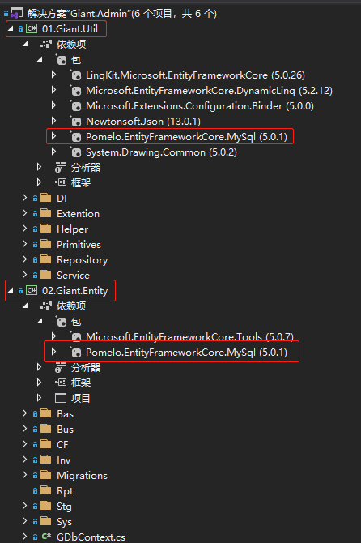
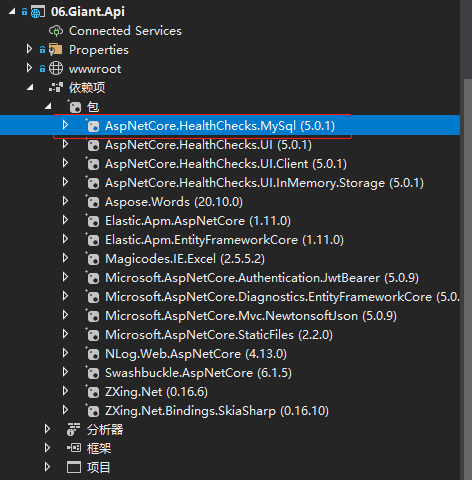

前言
在开发WMS产品前,我们是以SqlServer数据库为基础进行开发.
但是产品是支持多种数据库的.
理论上只要是EFCore支持的关系型数据库,都可以用做WMS的部署
参考EFCore 数据库提供程序
变更引用包
在产品中,有2处地方要修改数据库提供程序
原来引用Microsoft.EntityFrameworkCore.SqlServer包的地方
要修改为Pomelo.EntityFrameworkCore.MySql

在API项目中.因为在健康检查的时候,要检查数据库是否健康
所以要把AspNetCore.HealthChecks.SqlServer
修改引用AspNetCore.HealthChecks.MySql

修改数据库连接
1.Giant.Api下面的appsettings.json配置文件–>GDbContext
2.Giant.Entity下面的GDbContext.cs–>GDbContextFactory
3.把Giant.Entity–>GDbContext.cs–>GDbContextFactory里,把UseSqlServer修改为UseMySql
1
2
3
4
5
6
7
8
9
10
11
| public class GDbContextFactory : IDesignTimeDbContextFactory<GDbContext>
{
public GDbContext CreateDbContext(string[] args)
{
var optionsBuilder = new DbContextOptionsBuilder<GDbContext>();
var serverVersion = new MySqlServerVersion(new Version(8, 0, 26));
optionsBuilder.UseMySql("server=localhost;user id=root;password=mysqlrootpassword;persistsecurityinfo=True;database=wmsdatabase;SslMode=none;CharSet=utf8mb4;", serverVersion);
optionsBuilder.EnableSensitiveDataLogging();
return new GDbContext(optionsBuilder.Options);
}
}
|
4.把Giant.Api–>Startup.cs里,把UseSqlServer修改为UseMySql
1
2
3
4
5
6
7
| services.AddDbContext<GDbContext>(options =>
{
var serverVersion = new MySqlServerVersion(new Version(8, 0, 26));
options.UseMySql(Configuration.GetConnectionString("GDbContext"), serverVersion);
options.EnableSensitiveDataLogging();
options.LogTo((str) => { Console.WriteLine(str.Replace("`", "")); }, minimumLevel: LogLevel.Information);
});
|
修改特殊代码
因为在SqlServer中,给表时间字段设置默认值是GETDATE()
而在MySql中,默认值是(NOW())
所以在Giant.Entity项目里,
有用到.HasDefaultValueSql(“getdate()”)的地方
修改为.HasDefaultValueSql(“(NOW())”)
同时,把业务表基类Giant.Util–>BusEntity.cs里用到的getdate()也修改为(NOW())
builder.Property(p => p.CreateTime).HasDefaultValueSql(“(NOW())”);
builder.Property(p => p.ModifyTime).HasDefaultValueSql(“(NOW())”);
在数据库函数引用地地方，MySql和SqlServer在DATEDIFF这个函数的处理是不同的
并且WMS重新实现了DATEDIFF这个函数，所以要修改为MySql版本的DATEDIFF函数
修改Giant.Entity–>GDbContext.cs
1
2
3
4
5
6
7
8
9
10
11
12
13
14
15
16
17
18
19
20
21
22
23
24
25
26
27
28
29
|
protected override void OnModelCreating(ModelBuilder modelBuilder)
{
base.OnModelCreating(modelBuilder);
modelBuilder.ApplyConfigurationsFromAssembly(this.GetType().Assembly);
modelBuilder.HasDbFunction(typeof(GDbContext).GetMethod(nameof(DateDiffDay), new[] { typeof(string), typeof(string) }))
.HasTranslation(args =>
new SqlFunctionExpression("DATEDIFF",
new[] { args.Skip(1).First(), args.First() },
nullable: true,
argumentsPropagateNullability: new[] { true, true },
typeof(int),
null)
);
modelBuilder.HasDbFunction(typeof(GDbContext).GetMethod(nameof(DateDiffDay), new[] { typeof(string), typeof(DateTime) }))
.HasTranslation(args =>
new SqlFunctionExpression("DATEDIFF",
new[] { args.Skip(1).First(), args.First() },
nullable: true,
argumentsPropagateNullability: new[] { true, true },
typeof(int),
null)
);
}
|
因为数据库健康检查是与数据库相关的
所以要修改为MySql版本的数据库健康检查
修改Giant.Api–>HealthCheckExtentions.cs
1
2
3
4
5
6
7
8
9
10
11
12
13
14
15
16
17
18
19
20
21
22
23
24
25
26
| public static class HealthCheckExtentions
{
public static IServiceCollection AddWMSHealthChecks(this IServiceCollection services, IConfiguration config)
{
var checkBulider = services.AddHealthChecks();
checkBulider.AddMySql(
connectionString: config.GetConnectionString("GDbContext"),
name: "数据库检查",
failureStatus: HealthStatus.Degraded,
tags: new string[] { "System" }
);
var checkTypes = Assembly.GetExecutingAssembly().GetTypes()
.Where(w => typeof(IHealthCheck).IsAssignableFrom(w) && w.GetCustomAttributes().Select(s => s.GetType()).Contains(typeof(HealthCheckAttribute)))
.ToList();
foreach (var checkType in checkTypes)
{
var attr = checkType.GetCustomAttribute<HealthCheckAttribute>();
checkBulider.Add(new HealthCheckRegistration(attr.Name, s => (IHealthCheck)ActivatorUtilities.GetServiceOrCreateInstance(s, checkType), attr.FailureStatus, attr.Tags));
}
services.AddHealthChecksUI().AddInMemoryStorage();
return services;
}
}
|
重建数据迁移
因为数据库变化了。原来Code First创建的数据库迁移也不能用
所以要把Giant.Entity项目下面Migrations文件夹里的迁移文件全都删除
然后打开“程序包管理控制台”，切换到Giant.Entity项目
1
2
3
4
|
Add-Migration Init
Update-Database
|
至此数据库切换就全部完成
MySql数据库里的表也全部重建完成